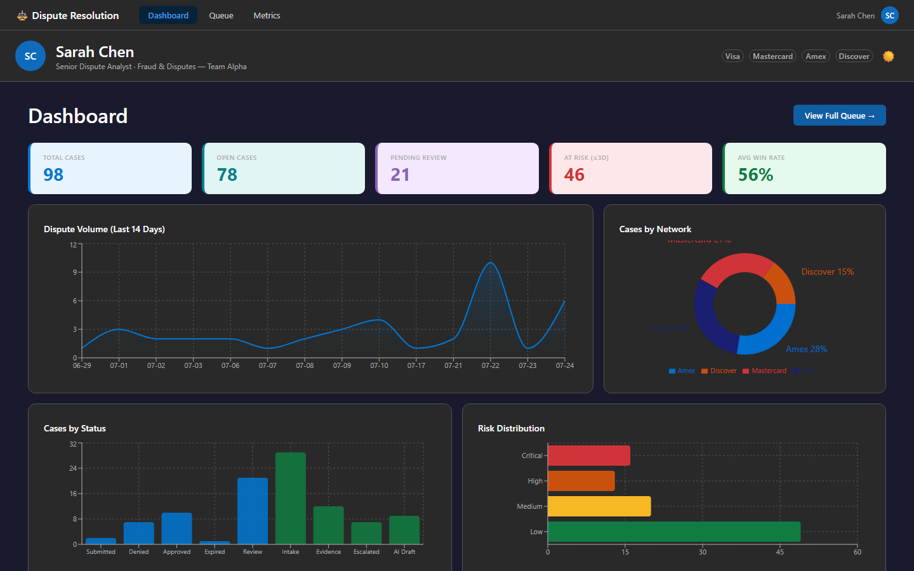
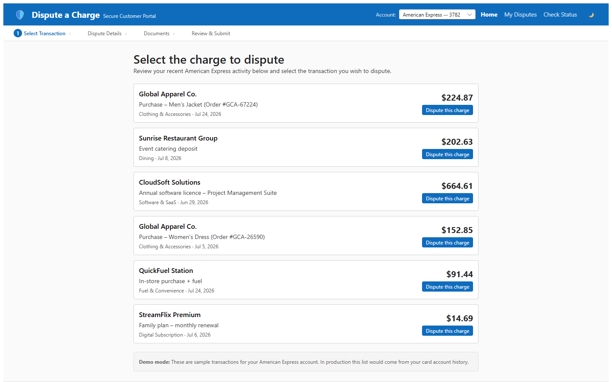
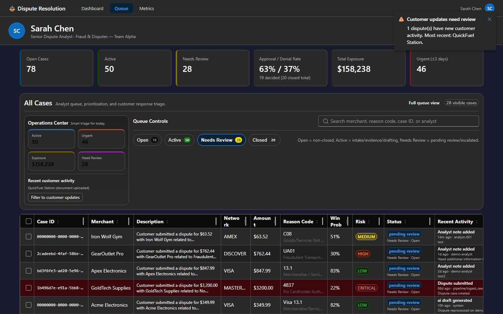
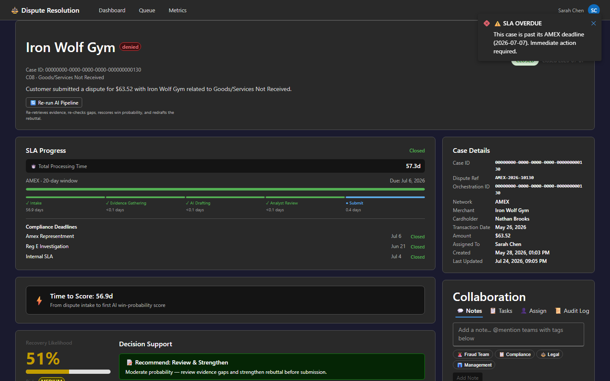

🖼️ Application Screenshots
Dark-mode captures from the deployed application environments. Both Static Web Apps are built on React 18 · TypeScript · Vite · Fluent UI v9 and hosted as Azure Static Web Apps with managed-identity Function App integration.


Additional Views


🏗️ Azure Application Landing Zone
The diagram below shows the target Azure application landing zone pattern for this accelerator. Internet traffic enters through a WAF ingress layer, is routed to two Static Web App instances (the Analyst Portal and the Customer Portal), which call a shared Function App backend. Private endpoints connect the Function App to Cosmos DB, Storage, Key Vault, Microsoft Foundry, Azure AI Search, Event Grid, and Application Insights.
![Azure application landing zone diagram showing internet users → WAF ingress → two Static Web Apps (Web App 1 and Web App 2) on an App Service Integration Subnet → Function App with VNet integration → Private Endpoint Subnet → Private PaaS Services including Cosmos DB (operational data), Storage Blob (documents/artifacts), Key Vault (secrets/certificates), Microsoft Foundry (models/projects), Azure AI Search (indexes/retrieval), Event Grid (event publishing), and Application Insights via Azure Monitor Private Link Scope](../images/landing-zone-architecture.png)
MVP/demo: public endpoints used for deployment convenience. Private-link plumbing is in place for a future hardening phase (see
infra/modules/private-endpoints.bicep).
🌐 Ingress Layer
Internet traffic enters via public HTTPS to the two Static Web Apps. WAF (Front Door Premium or Application Gateway) is the intended ingress path in a hardened configuration.
📱 App Service Integration Subnet
Both Static Web Apps are deployed to Azure's Static Web App service. The Function App uses outbound VNet integration for private east–west calls.
🔒 Private Endpoint Subnet
Service private endpoints are provisioned in infra/modules/private-endpoints.bicep. Currently scoped to a future-phase rollout while the MVP runs on public endpoints.
☁️ Private PaaS Services
Cosmos DB, Blob Storage, Key Vault, Microsoft Foundry, Azure AI Search, Event Grid, and Application Insights — all connected via managed identity + RBAC, no connection-string secrets at runtime.
💻 Two Web Applications
🔎 Analyst Disputes Portal MVP
Source: src/web/
Stack: React 18 · TypeScript · Vite · Fluent UI v9 · React Router v6 · Recharts
Host: Azure Static Web App (Standard SKU) — linked as primary backend to the Function App
Deployed as: azd-service-name: web in azure.yaml
The analyst-facing SPA provides: case queue with SLA countdown badges, case detail with evidence timeline,
AI-score display, approve/deny/escalate HITL actions, and a processing metrics dashboard.
Calls the Function App backend via the /api reverse-proxy set up by the SWA linked-backend feature.
🙋 Customer Portal Simulation tool
Source: src/customer-portal/
Stack: React 18 · TypeScript · Vite · Fluent UI v9 · React Router v6
Host: Azure Static Web App (Standard SKU) — calls the Function App via direct CORS URL
Deployed as: azd-service-name: portal in azure.yaml
A simulation tool — not a real bank portal. Allows demo submission of dispute cases with document uploads,
driving the end-to-end pipeline so the Analyst Portal receives a populated case to review.
API base URL is injected at build time via VITE_API_BASE_URL from the prepackage hook.
Why two separate Static Web Apps?
Azure's SWA linked-backend feature is exclusive per Function App: a single Function App
can be the /api proxy backend for only one SWA at a time. The Analyst Portal claims
the linked-backend slot; the Customer Portal reaches the same Function App via an absolute CORS URL,
keeping both surfaces independently deployable with no shared hosting contract.
🗄️ Azure Cosmos DB — Backend Persistence
Cosmos DB (NoSQL API) is the operational store for dispute cases, evidence documents, and processing timelines. It was chosen because:
- Flexible schema — case documents vary by card network (Visa, MC, Amex, Discover) and evidence type; Cosmos' JSON model handles structural variation without schema migrations.
- Low-latency reads — the Analyst Portal's case queue needs sub-second response at demo-scale; Cosmos single-region reads are consistently fast.
- Event-oriented workflow fit — each Durable Functions orchestration step appends to the case document's
timelinearray, creating a natural audit trail without a separate event log table. - RBAC-first access — the Function App uses managed identity + Cosmos RBAC (
infra/modules/cosmos-rbac.bicep), so no connection string is ever stored in Key Vault or app settings.
📋 disputes container
One document per case: metadata, card-network info, cardholder claim, status, AI score, HITL decision, and a timeline[] array of workflow events.
📎 evidence container
Evidence artifacts (transaction records, shipping docs, comms) linked to a dispute by case ID. Stored as structured JSON; raw blobs go to Storage.
🔗 Managed Identity Access
No secrets in flight. The Function App's system-assigned managed identity is granted Cosmos DB Built-in Data Contributor via Bicep at provision time.
🔄 Dispute Submission — End-to-End Flow
Trace a dispute from the customer's browser to the analyst's queue:
Customer Portal
Cardholder selects a disputed transaction, uploads supporting documents, and submits via the Customer Portal SWA (src/customer-portal/). A POST hits the Function App's /api/disputes endpoint.
Function App Intake
The Python Function App (src/api/function_app.py) receives the payload via HTTP trigger, writes an initial case document to Cosmos DB, and publishes an intake event to Event Grid.
Cosmos Persistence
The case document is created in the disputes container with status submitted. Evidence metadata lands in the evidence container; raw blobs go to Azure Storage.
Agentic Pipeline
A Durable Functions orchestration fans out to the AI workflow: Triage scoring → Reason-code classification → Evidence retrieval → Gaps detection → Win-probability scoring → Maker Agent rebuttal draft. See pipeline diagram in docs/phase1-architecture.png.
Foundry Agent
The Maker Agent (Azure AI Foundry, DeepSeek-V3.2) generates a grounded rebuttal draft. A Checker Agent validates groundedness. The AI score and draft are appended to the case timeline[]. Deeper agent detail is covered in the AI segment.
HITL Gate
A Durable Functions external-event wait suspends the orchestration. The analyst sees the case in the Disputes Portal queue with score, evidence summary, and draft rebuttal — then approves, denies, or escalates.
Analyst Portal
The React Analyst Portal (src/web/) polls case status from Cosmos via the Function App. The analyst acts on the HITL gate, persisting the decision back to the case document and completing the orchestration.
Agent note: Only agents and deployments confirmed in source/infra are named above.
The Evidence Retrieval Agent (#12) and Gaps Detection / Win-Probability agents (#18, #30)
are code-complete but not yet deployed to the live app; they are represented in the pipeline
diagram with their current status. See docs/phase1-architecture.png for the full annotated state.
🔧 Infrastructure as Code — azure.yaml, Bicep & AZD
azure.yaml — Single source of truth
The azure.yaml
file ties the three services to their Azure host types and build outputs:
api service
Python · Azure Functions host · deploys from src/api/
web service
JavaScript · Static Web App · Vite dist from src/web/
portal service
JavaScript · Static Web App · Vite dist from src/customer-portal/ · prepackage hook injects VITE_API_BASE_URL
Bicep — Modular provisioning
All Azure resources are defined in infra/
as composable Bicep modules:
main.bicep— top-level orchestrator; calls all modules with environment-parameterized valuesmodules/staticwebapp.bicep— reused for both SWAs; setsazd-service-nametag so AZD matches service to resourcemodules/functions.bicep— Function App + EasyAuth override (disables Azure's async re-enable side effect)modules/cosmos.bicep+cosmos-rbac.bicep— Cosmos account and managed-identity RBAC grantsmodules/ai.bicep— Azure AI Services account (AIServices kind, S0 SKU)modules/private-endpoints.bicep+network.bicep— VNet and private endpoint plumbing for future phase
azd up — Local end-to-end validation
A single azd up provisions infra, builds all three services, and deploys — making it the fastest
way to validate the full stack locally or in a fresh environment. The CD pipeline reuses the exact
same azure.yaml + Bicep configuration, so there is no environment drift between
developer machines and production.
postprovision hook — After ARM completes, the hook waits 90 s for Azure's async
EasyAuth re-enable side-effect to settle, then re-asserts platform.enabled: false via
az rest PUT. This is idempotent and runs on every azd provision / azd up.
This pattern is fully documented in the azure.yaml comments and
infra/modules/functions.bicep.
⚙️ CI/CD Pipeline — GitHub Actions
CI (.github/workflows/ci.yml) — runs on every branch push
CD (.github/workflows/cd.yml) — triggered by successful CI on main
📸 Pipeline Evidence
A live completed-run screenshot can be added once supplied. In the meantime, view the latest GitHub Actions runs directly in the repository:
👉 github.com/yortch/disputes/actions
CI runs on every branch push; CD runs on successful CI against main,
using Azure OIDC (no long-lived secrets) and azd deploy for all three services.
A self-hosted runner with VNet access handles the Function App zip deployment to avoid public-internet egress restrictions.
🌐 Azure Portal Walkthrough — Deployed Resource Group
Open the deployed resource group and walk through the following resources:
📱 Static Web App — Analyst Portal
azd-service-name: web. Show the default hostname, the linked-backend wiring to the Function App,
and the environment variables tab. Note Standard SKU is required for linked backends.
📱 Static Web App — Customer Portal
azd-service-name: portal. No linked backend. Show VITE_API_BASE_URL
in app settings — this is the direct CORS URL to the Function App injected by the prepackage hook.
⚡ Function App
Python 3.11 · Flex Consumption plan. Show the functions list (/api/disputes, /api/cases, etc.),
App Insights integration, and the managed identity blade. Auth is set to anonymous —
EasyAuth is explicitly disabled to allow the Customer Portal to call directly via CORS.
🗄️ Cosmos DB
Show the Data Explorer with the disputes and evidence containers.
Open a sample case document to show the timeline[] array of workflow events.
Point to the RBAC blade — no keys used, only managed identity.
🤖 Microsoft Foundry
Show the AI Foundry resource (AIServices account, S0 SKU). Note: the Maker Agent (DeepSeek-V3.2) is deployed but not yet connected to the live app. Deeper agent configuration is covered in the AI segment.
🔒 Private-Link Plumbing
Future phase
The VNet, private endpoint subnet, and Private DNS zones are provisioned by
infra/modules/network.bicep and private-endpoints.bicep.
The MVP uses public endpoints for deployment convenience. Private isolation
is the planned hardening step once the demo baseline is stable.